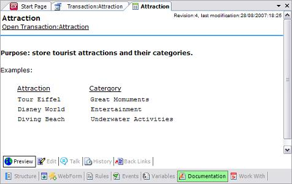

Application documentation is an important part of your Knowledge Base. Development documents range from application requirements to developer-to-developer notes, to-do lists, etc. GeneXus provides a Wiki-style Documentation editor and repository. Wiki-style documentation has been adopted and is used by the IT community worldwide. Documents are edited with an (almost) WYSIWYG editor. They can include links to other documents, attributes, objects, etc. in your Knowledge Base. Files can also be stored in the Knowledge Base as part of your documentation. You can include a link to an object, like in the following example, with the 'Attraction' transaction:
To return to the Documentation editor window, all you have to do is choose the Documentation selector of the transaction. The finished documentation is shown below: 
|
| Sub Categories |
| Category:Synchronize Documentation |
| Pages |
| Object Documentation |